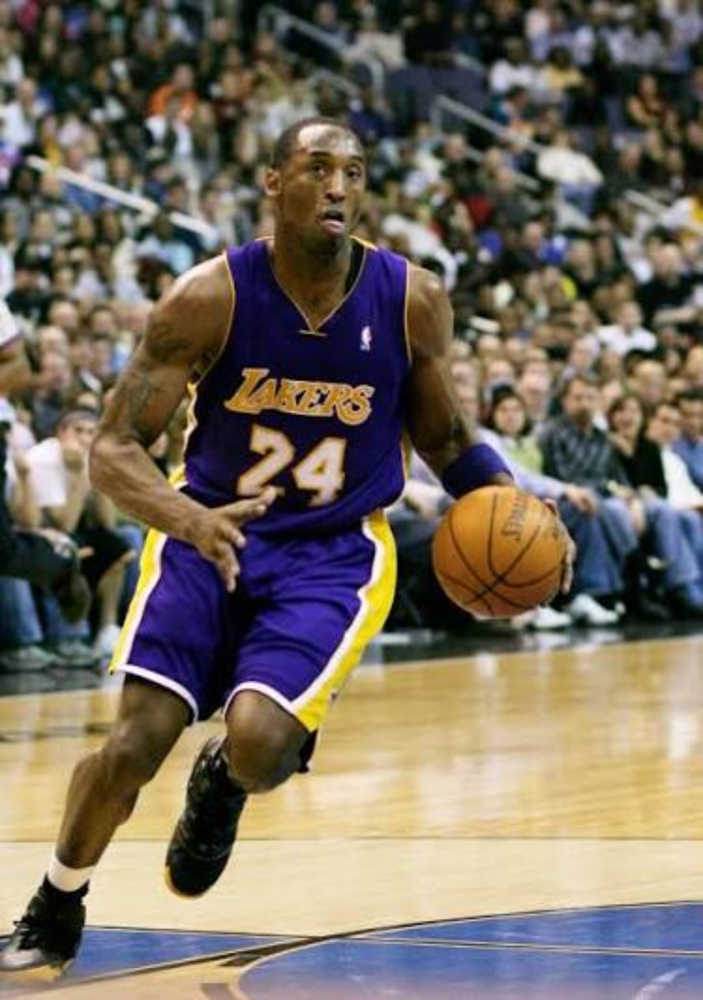
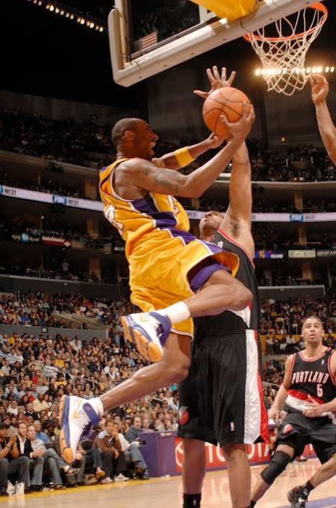
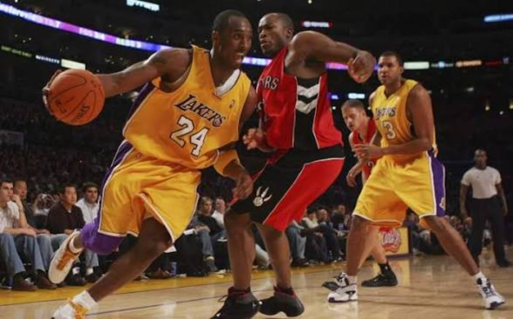

No. 24 looked like a new beginning. The Lakers around Kobe still looked like a team asking a superstar in his prime to cover too many weaknesses.
01. THE NUMBER CHANGED BEFORE THE CIRCUMSTANCES DID.
For ten NBA seasons, No. 8 had been Kobe: the afro, the dunk contest, the Utah airballs, the three championships alongside Shaq, the feud, the breakup, 81 and the 35.4-point season. Then, in the fall of 2006, No. 8 disappeared. No. 24 walked onto the floor. It looked like a new beginning. It just took the Lakers a little longer to become a new team. In hindsight, No. 24 became the MVP, three straight Finals appearances and back-to-back championships. None of that existed yet. The jersey changed before the roster did.
02. AN EASY 30 EVERY NIGHT.
Kobe averaged 31.6 points, 5.7 rebounds and 5.4 assists, won a second straight scoring title and made both All-NBA First Team and All-Defensive First Team. But thirty stopped feeling extraordinary. It felt normal. At 28, the athleticism was still elite while the footwork, jumper, counters and command had matured. We look at 2005–06 and 2006–07 as peak individual Kobe — and, in our view, the best player in basketball at the time.

03. WHEN 30 WASN'T ENOUGH.
The Lakers were not empty. They had useful NBA players. The problem was how many were being asked to play above their ideal roles. Smush Parker started 80 regular-season games. Andrew Bynum was 19 and developing. Kwame Brown was limited offensively. Luke Walton was a useful connector. Jordan Farmar was a rookie. Take Kobe off that roster and we believe the Lakers are a lottery team. That is a 4DK assessment, not a counterfactual we can prove. It explains why so many scoring explosions felt necessary instead of decorative.
04. LO COULD HOOP. THAT WASN'T THE PROBLEM.
Lamar Odom deserves more respect than the lazy version of this story gives him. LO could handle, score, rebound, create and defend. He averaged 15.9 points, 9.8 rebounds and 4.8 assists. The issue was fit. Odom was built to be the do-everything piece on a great team, not necessarily the conventional No. 2 scorer expected to give you 20-plus every night. Asking him to carry that burden beside Kobe exposed the roster more than it exposed Odom.
05. 65. THEN HE KEPT GOING.
By March, Los Angeles had lost seven straight. Then Kobe went nuclear.
Four consecutive 50-point games. Four Lakers wins. Only Wilt Chamberlain had previously produced a streak of that kind. The opening act was the masterpiece: 65 against Portland in an overtime win.

Sometimes Kobe shot that much because what exactly was the alternative?
06. 42–40 TELLS THE STORY.
The final record was 42–40. That is the tension of File 004 in one line: one of the greatest scorers ever operating at the height of his individual powers, attached to a team barely above .500.

07. PHOENIX WAS LOADED.
The first-round matchup was a reality check, not a shocking upset. Phoenix won 61 games and had Steve Nash, Amar'e Stoudemire, Shawn Marion, Raja Bell, Leandro Barbosa and Boris Diaw. We thought that Suns team was good enough to reach the Finals. Kobe averaged 32.8 points in the five-game series. Odom was excellent at 19.4 points and 13.0 rebounds. Nobody else on the Lakers averaged double figures. Phoenix won 4–1. The better team won.
08. THIS WAS PEAK KOBE.
There are Kobe seasons with better team results: 2007–08 MVP Kobe, 2008–09 championship Kobe and 2009–10 repeat Kobe. But if the question is simply how good Kobe Bryant was individually, 2005–06 and 2006–07 sit in the center of the conversation for us. These were the seasons when an easy 30 felt routine and a scoring explosion could happen on any night.
09. FIX THE ROSTER. DON'T TRADE THE SUPERSTAR.
By the end of the season, the frustration had become impossible to ignore. Another first-round exit meant another year of Kobe's prime had passed without a championship-level roster around him. Our view then is our view now: fix the roster. Kobe was still in his prime. We did not see a realistic trade that could give the Lakers equal value for him. You do not solve a roster problem by moving the player keeping the roster relevant.
10. #24 WAS ALMOST OVER BEFORE IT REALLY STARTED.
Today, No. 24 immediately brings back MVPs, Finals and championships. In summer 2007, those memories did not exist yet. No Pau Gasol. No 2008 Finals. No 2009 title. No 2010 repeat. We remember looking toward 2007–08 believing the Lakers had a clock on them: show Kobe this thing is moving forward or risk losing him. If the next season had started badly, we believe Kobe could have been gone by the trade deadline.
THE NUMBER CHANGED BEFORE THE CIRCUMSTANCES DID.
No. 24 arrived in 2006. The championship Lakers associated with that number had not arrived yet.
Kobe gave them 31.6 a night. He gave them 65. He gave them four straight 50-point games. He carried another flawed roster into the postseason and ran into a Phoenix team with far more weapons.
The first year of No. 24 was not the beginning of another championship run. It was the warning before it.
Build around Kobe Bryant — or risk watching the next chapter of his prime happen somewhere else.
SOURCES / RECORD
Season and playoff numbers were checked against NBA historical records and StatMuse. Editorial conclusions and retrospective judgments are 4DK's.